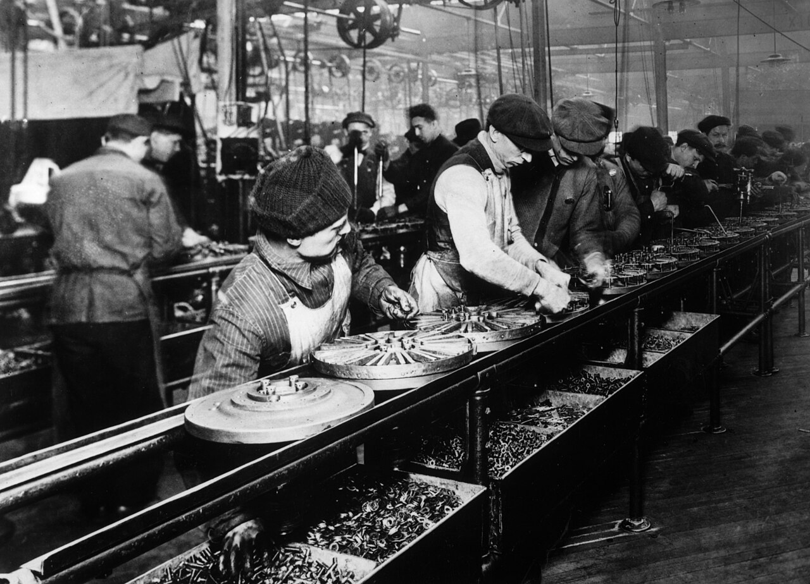
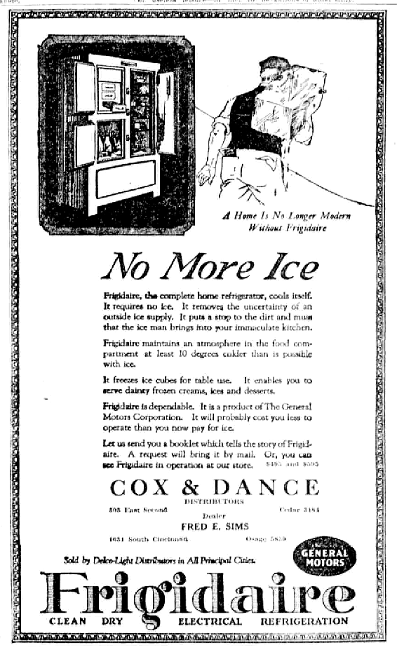
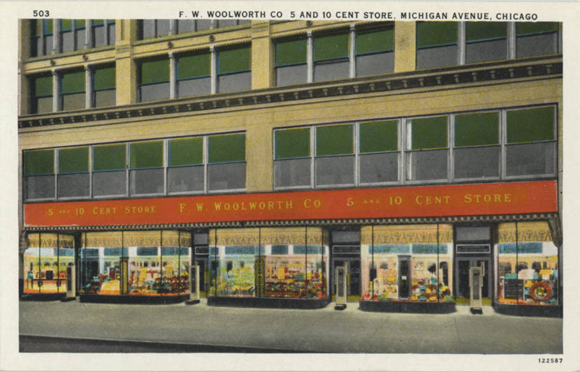

Directions: Work through the five stations in order. Each station presents one element of the new consumer economy of the 1920s: a falling price, a new wage, an advertisement, a credit contract, and a new kind of store. Answer the questions at each station. At the end, judge which element did the most to create a consumer culture and defend your judgment with the station evidence.
Source: Photograph of workers assembling a Model T, 1913, with Ford list prices for the Model T touring car.

Ford list prices for the Model T touring car:
| Year | Price |
|---|---|
| 1909 | $850 |
| 1912 | $600 |
| 1914 | $490 |
| 1916 | $360 |
The runabout, the cheapest Model T, fell further still and reached $260 in 1925. In 1909 a touring car cost more than most workers earned in a year. By the middle of the 1920s a worker earning steady factory wages could buy the cheapest Ford with a few months of pay. The price fell because the cost of building each car fell, and the cost fell because the moving assembly line and interchangeable parts raised the output of every worker on the line.
By how much did the touring car price fall between 1909 and 1916, in dollars and as a share of the 1909 price? Show your arithmetic.
Explain the chain of cause and effect that connects the moving line in the photograph to the 1925 runabout price. Name every link in the chain.
Source: Summary of the Ford five-dollar-day plan as announced on January 5, 1914, and of the Sociological Department rules that governed the profit share. Summary prepared for this lesson from the company announcement and department practice.
The announcement doubled the pay of most Ford production workers to five dollars for an eight hour day, at a time when two to three dollars a day was common factory pay. The five dollars combined a base wage of about $2.34 with a share of company profits of about $2.66. The profit share was not paid to everyone. A worker generally had to be a man of twenty-two or older with at least six months at the company. Most women were excluded at first.
To keep the profit share, a worker had to satisfy investigators of the Sociological Department, who visited his home. The company expected him to abstain from alcohol, keep a clean house, avoid taking in boarders, avoid gambling, and put money in a savings account. A worker who failed an inspection could lose the profit share for six months while he corrected the fault. Ford hired about 53,000 men in 1913 to keep about 14,000 jobs filled. After the announcement, turnover fell sharply, and thousands of applicants traveled to Detroit hoping for Ford jobs.
Give two business reasons Ford gained from the five-dollar day, and support each one with a fact from the station text.
What did the worker give Ford in return for the profit share, beyond his work on the line? Answer with the inspection system as your evidence.
Source: Newspaper advertisement for the Frigidaire electric refrigerator, a product of the General Motors Corporation, 1922. Headline and advertising lines transcribed from the advertisement. Wikimedia Commons.

The headline reads: No More Ice. A line beside the drawing of a man carrying a block of ice reads: A Home Is No Longer Modern Without Frigidaire. The text begins: Frigidaire, the complete home refrigerator, cools itself. It requires no ice. It later adds: It freezes ice cubes for table use. The advertisement closes by inviting the reader to send for a booklet or to see the machine at a dealer, and lists prices of $195 and $695 for its models.
An electric refrigerator in 1922 was a new and expensive machine. Most American homes still kept food in an icebox cooled by a delivered block of ice. The advertisement does not argue only that the machine keeps food cold. It argues that a home without one has fallen behind.
Identify two selling appeals in the advertisement that go beyond keeping food cold, and quote or closely cite the words that carry each appeal.
The cheapest model listed cost $195 at a time when a new Model T runabout cost $260. What does that comparison show about the size of the decision a family faced in buying an appliance?
Source: Model installment contract prepared for this lesson. The terms follow the standard form of installment contracts used by appliance and automobile sellers in the middle of the 1920s. It is a teaching model, not a transcription of one surviving contract.
Installment contract, household refrigerator. Cash price of the refrigerator: $195. Down payment at delivery: $25. Balance with carrying charge: $180. The buyer will pay $10 on the first day of each month for 18 months. Total of all payments, including the down payment: $205. The seller keeps title to the refrigerator until the last payment is made. If the buyer misses a payment, the seller may take back the refrigerator, and payments already made are treated as rent for its use.
Contracts of this form sold cars, radios, washing machines, furniture, and clothing as well as refrigerators. Contemporary estimates held that a large share of new cars were sold on installments by the middle of the decade.
How much more than the cash price does the buyer pay under this contract, and what is that extra amount paying for?
A buyer loses his job in month ten, having paid the down payment and nine monthly payments. Under the contract, what does he keep, and what does he lose? Add the payments he has made.
Source: Postcard view of the F. W. Woolworth Company five and ten cent store on Michigan Avenue, Chicago, dated 1928 in the New York Public Library record, with a comparison of chain and independent store practice.

Woolworth, the A and P, and the other chains ran every store to one company plan. The A and P grew from about 4,300 stores in 1920 to about 15,000 by the end of the decade. A chain bought goods in carload lots at the lowest wholesale prices, stocked the same goods in every store, sold for cash, and offered no delivery service. An independent merchant bought in small lots, often extended credit to regular customers, delivered orders, and knew his customers by name, and his prices had to cover the cost of each of those services.
The teaching table below compares the price of the same small basket of staple groceries at the two kinds of store. The figures are round teaching figures prepared for this lesson to show the direction and rough size of the gap that shoppers of the period described. They are not copied from a single surviving price list.
| Basket of staple groceries | Chain store | Independent store |
|---|---|---|
| Coffee, sugar, flour, soap, and canned goods | $1.00 | $1.15 |
Name three chain practices from the station text that lowered the cost of selling goods, and explain how each one lowered the final price.
What did the shopper give up by buying at the chain instead of the independent store? Name at least two things, and say why some shoppers accepted the trade.
Rank the five elements from 1 to 5 by how much each one contributed to creating a consumer culture, a national pattern of buying in which ordinary families expected to purchase new manufactured goods as a normal part of life. (1 = Contributed the Most, 5 = Contributed the Least).
______ The Falling Price (mass production and the Model T)
______ Five Dollars a Day (higher industrial wages)
______ No More Ice (national advertising)
______ Buying on Time (installment credit)
______ The Chain Store (cheap national distribution)
Defend your top choice in a short paragraph. Use specific evidence from the station for your top choice, and compare it with evidence from at least one other station to show why your choice contributed more.
By how much did the touring car price fall between 1909 and 1916? The price fell from $850 to $360, a fall of $490. As a share of the 1909 price, $490 divided by $850 is about 58 percent, so the 1916 price was about 42 percent of the 1909 price. Accept answers that show the subtraction and a reasonable division.
Explain the chain of cause and effect that connects the moving line to the 1925 runabout price. The moving line brought the work to stationary workers who repeated one task, and interchangeable parts removed fitting. Output per worker rose, so the labor cost inside each car fell. Ford cut the price as costs fell. Lower prices enlarged the body of possible buyers, larger sales justified still greater output, and the runabout reached $260 in 1925. Full credit requires every link: line, productivity, unit cost, price, market size.
Give two business reasons Ford gained from the five-dollar day. Any two, supported. Turnover fell, so Ford spent less on hiring and training replacements for a line that needed a steady crew; the 1913 figure of about 53,000 hires for 14,000 jobs shows the cost being cured. The announcement drew thousands of applicants, so Ford could select workers from a large pool. Higher pay also put cash in workers' hands, and a Ford worker could earn the price of the cheapest car in about two months, which enlarged the market for the product itself. Stable, experienced crews also kept the line running at its set pace.
What did the worker give Ford in return for the profit share, beyond his work on the line? He gave the company authority over his private life. Sociological Department investigators entered his home and judged his drinking, gambling, housekeeping, boarders, and saving, and failure could cost him the profit share for six months. The wage therefore bought the company a supervised worker at home as well as a paced worker on the line.
Identify two selling appeals that go beyond keeping food cold. Any two, cited. Modern status: A Home Is No Longer Modern Without Frigidaire presents the machine as the dividing line between a modern home and a backward one. Freedom from the iceman and his dirt: the headline No More Ice and the text about ending the uncertainty of an outside ice supply sell cleanliness and independence. Convenience and pride in serving: It freezes ice cubes for table use sells a new standard for entertaining at home. Credit requires the appeal and the words that carry it.
What does the $195 and $260 comparison show about the size of the decision? A single appliance cost about three quarters of the price of a new automobile. Buying a refrigerator was a major family purchase on the scale of buying a car, not a small household expense. That scale explains why sellers paired the advertisement with booklets, dealer demonstrations, and the installment contracts of Station 4.
How much more than the cash price does the buyer pay, and what is the extra amount paying for? The buyer pays $205 in total against a cash price of $195, so $10 more. The extra amount is the carrying charge, the price of credit itself: the seller is paid for waiting eighteen months for the full price and for carrying the risk that the buyer stops paying.
A buyer loses his job in month ten, having paid the down payment and nine monthly payments. What does he keep, and what does he lose? He has paid $25 plus nine payments of $10, a total of $115. Under the contract the seller keeps title until the last payment, so the seller may take back the refrigerator and treat the $115 as rent for its use. The buyer keeps nothing: no refrigerator and no refund. The answer shows why installment buying raised sales and household debt at the same time.
Name three chain practices that lowered the cost of selling goods. Any three, explained. Buying in carload lots lowered the wholesale price paid for each item. Selling for cash removed the cost of bookkeeping, credit losses, and collection. Offering no delivery removed wagons, drivers, and delivery time. Running every store to one standardized plan with the same stock lowered management and training costs and let the company spread its overhead across thousands of stores.
What did the shopper give up by buying at the chain? Any two. Personal credit that carried a family between paydays. Delivery to the home. A merchant who knew the family, gave advice, and could be asked for a favor. A locally owned store whose profits stayed in the town. Many shoppers accepted the trade because the price gap, shown in the teaching table at about fifteen cents on a one dollar basket, was real money on a weekly wage, paid on every trip to the store.
Student paragraphs will vary with the ranking. Full credit should be awarded if the student: